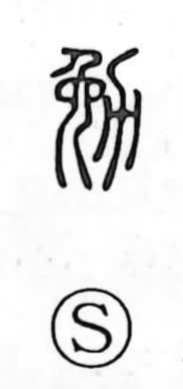

勉

Uncategorized
Kun: tsutomeru | On: ben
to endeavor ・ diligence ・ study ・ to encourage
Explanation
Shirakawa reads 勉 as a phono-semantic compound with 免 as the phonetic. He takes 免 (with the on value men) as depicting the posture of childbirth—an image of straining effort—and 力 as the form of a plow, evoking agricultural labor. Joined together they convey sustained exertion in fieldwork, and from there the broader sense of making every effort: to strive and work diligently (tsutomeru). The character thus comes to suggest spurring oneself on or encouraging diligence, and in compounds points toward studied application.